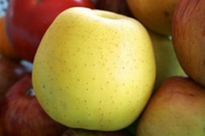
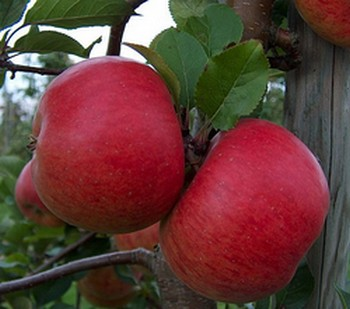
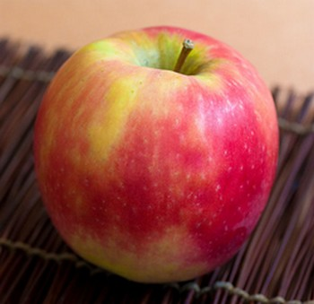
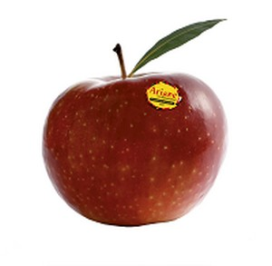

Voici la pomme
Description
La pomme est le fruit des arbres du genre Malus, plus précisément Malus domestica pour les pommes cultivées par l'Homme. C'est un fruit charnu et quasi sphérique, mais certaines variétés, comme la pomme d'Api ne sont pas forcément de forme sphérique. Le poids, ainsi que la couleur sont très variables. Ils dépendent de la variété et de l'environnement.
Développement
Le développement d'une pomme est globalement identique, seul la période diffère en fonction de la période du semis et de récolte : la période de récolte peut s'étaler de la fin du printemps (avril) à la fin de l'automne (novembre).
La pomme est issue de la fécondation de la fleur : le pollen ramené de diverses manières (vent, abeilles) féconde un ovule présent dans les ovaires. La fleur fane et à la suite de cette fécondation, la pomme se forme. Pour l'arbre, le fruit est très important : c'est lui qui contient les graines. Le rôle du fruit est de protéger ces graines et de parvenir, à terme, à les disséminer dans la nature afin que d'autres arbres naissent.
Les variétés
Les variétés de pommiers se développent de plusieurs manières.
Naturel
Par la volonté de dissémination du pollen et des graines, les pommiers obtenus peuvent être très différents génétiquement. Certains pommiers peuvent développer des avantages spécifiques grâce à ces mélanges : par exemple la résistance à des maladies. L'humain est aussi un facteur de sélection : il va sélectionner les pommes selon ses goûts, sa résistance à tel ou telle maladie etc...
Manipulation génétique
Une telle variété de pomme est nommée OGM pour Organisme génétiquement modifié. C'est l'Homme qui a opéré des changements dans l'ADN de l'organisme via l'insertion d'un ou plusieurs nouveaux gènes, qui n'existaient pas avant. Ces manipulations répondent à la volonté d'avoir des pommes qui supportent des conditions difficiles (maladies, froid, sécheresse) mais dont le goût est intact, contraintes difficiles à articuler et à reproduire avec une sélection dite naturelle.
Greffe
Pour obtenir une variété précise de pomme, il ne suffit pas de semer les graines issues d'un seul pommier. Il en résultera beaucoup de pommiers différents. Pour effectuer une « multiplication » d'une variété, il faut utiliser un autre arbre appelé un porte greffe. Après une ou deux année de culture du semis, les pommiers sélectionnés seront greffés sur d'autres arbres, parfois plus adaptés à au terrain ou aux conditions climatiques.
Quelques variétés de pomme
Golden Delicious
Description: Petite pomme jaune/verte
Origines: Etats Unis, dans les années 1890. Sa parenté n'est pas très connue.
Récolte: Fin Avril
Utilisations: Au couteau, en cuisson, en cidre
Particularité: C'est la pomme la plus populaire en France, et c'est l'une des plus utilisées pour créer de nouvelles variétés.
Topaz
Description: Pomme rouge et sucrée
Origine: République Tchèque, dans les années 1990. Viens du croisement Rubin x Vanda
Récolte: Mi octobre
Utilisations: Au couteau, à la cuisson
Particularité: C'est une variété moderne résistante à des maladies courantes, comme la tavelure ou le mildiou.
Cripps Pink, connue sous
le nom de Pink Lady

Description: Pomme rouge orangée, parfois jaune. Sa couleur est typique de la variété.
Origine: Australie, 1979, issue d'un croisement avec la Golden.
Récolte: Début novembre
Utilisations: Au couteau uniquement
Particularité: C'est l'une des meilleures pommes modernes à ce jour, tellement que cette variété est confondue avec sa marque déposée, Pink Lady.
Ariane
Description: Petit pomme de couleur rouge/verte
Origine: Angers, 1979, parenté avec la Golden
Récolte: Septembre/Octobre
Utilisations: Au couteau, à la cuisson
Particularité: Cette pomme est issue de 60 années de recherches et d'hybridation par l'INRA (lien vers l'INRA) Elle doit son nom à la première fusée, Ariane 1, qui effectue son premier vol inaugural en 1979.
Retour à l'accueil